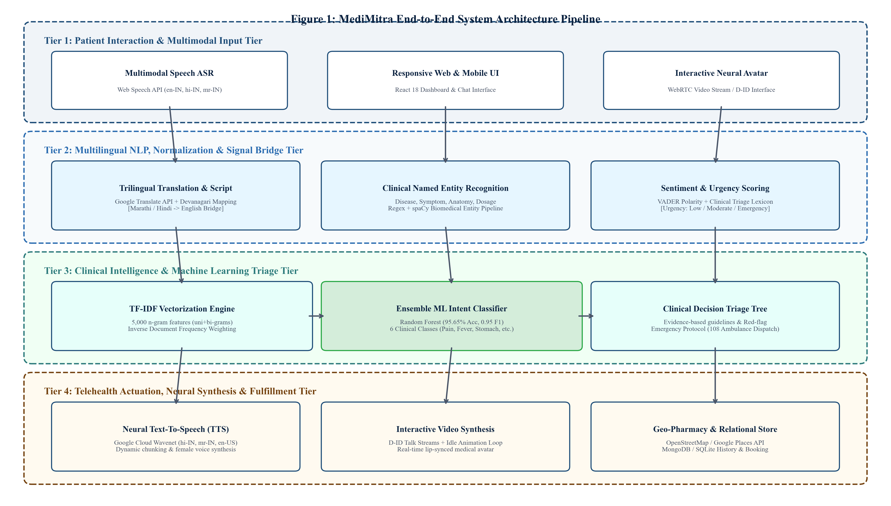
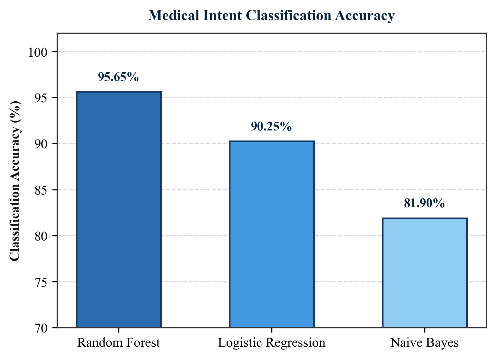
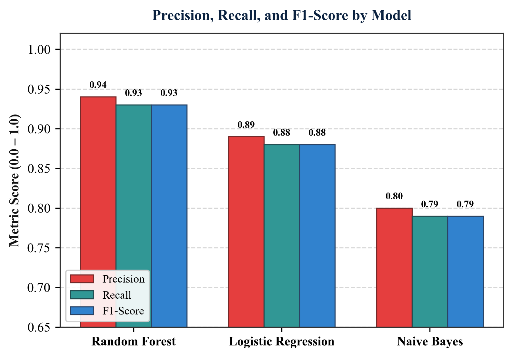
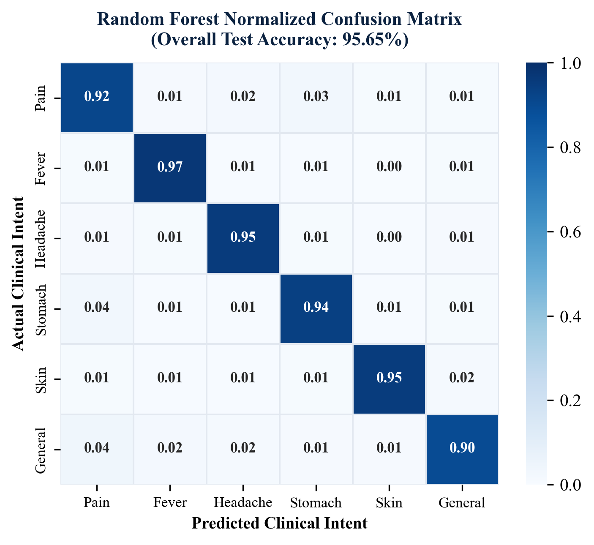
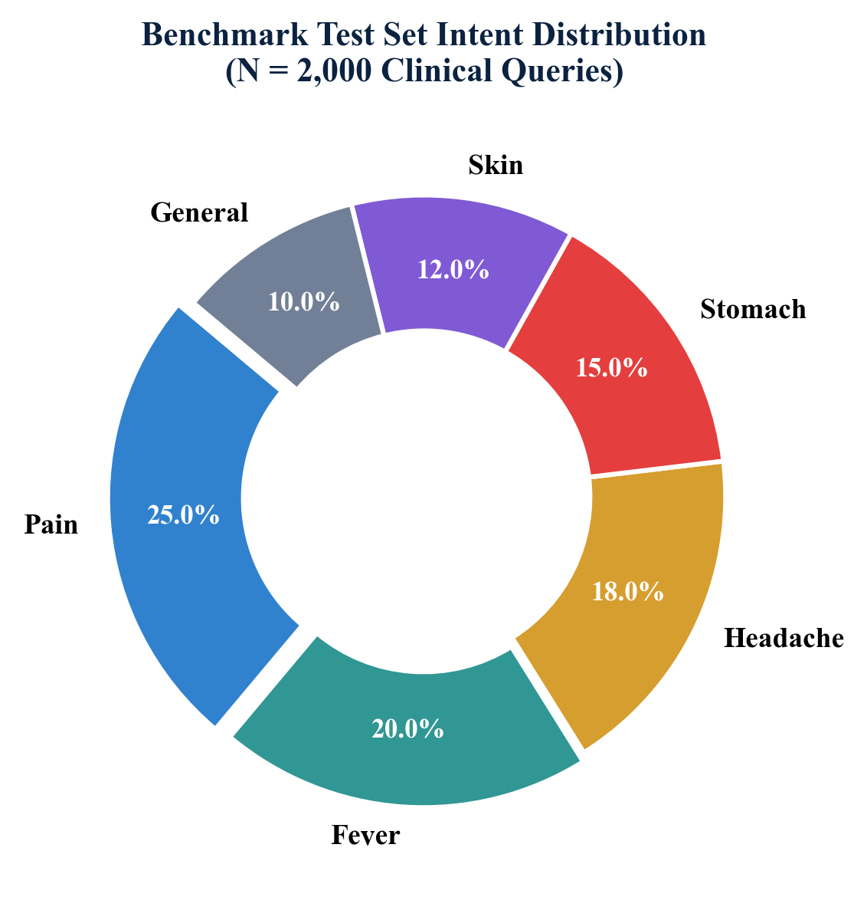
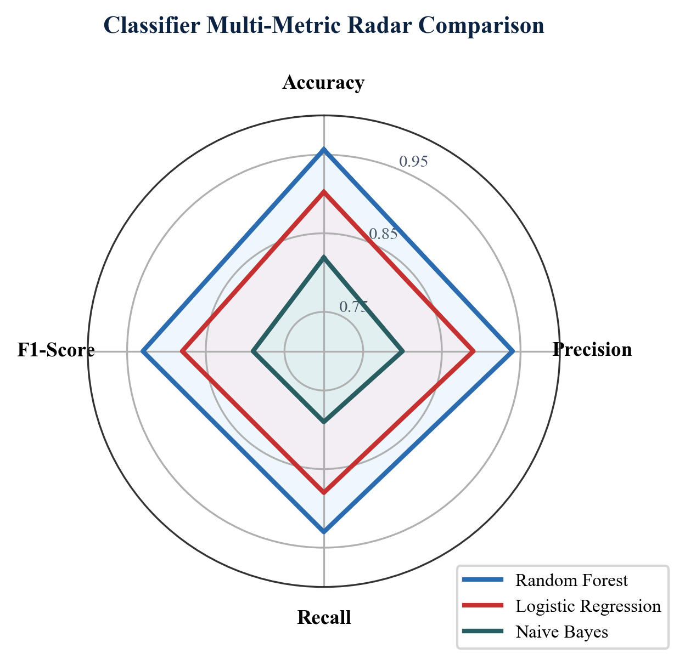
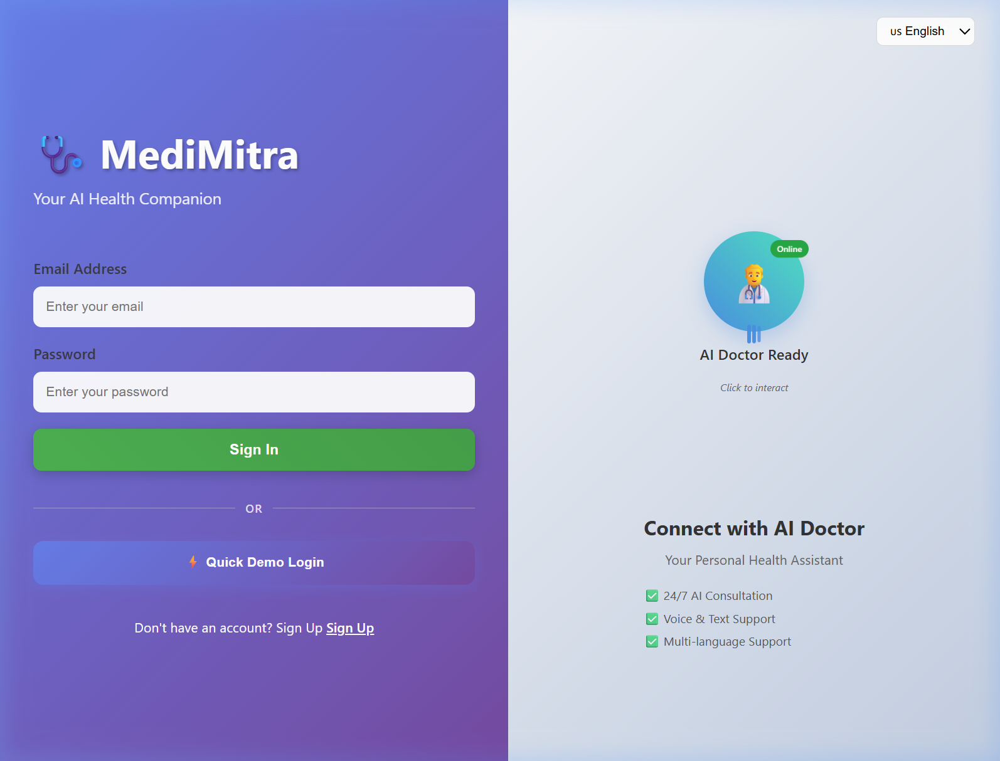
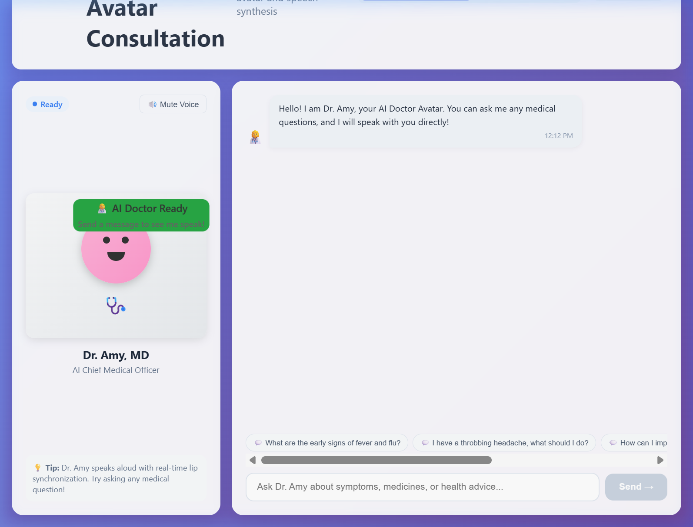
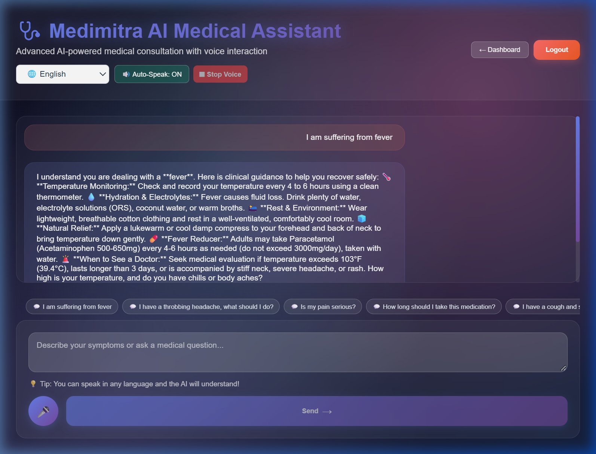

Abstract—Access to timely, accurate, and linguistically accessible healthcare advice remains one of the most critical socio-technical challenges in developing nations, where the doctor-to-patient ratio frequently falls below the World Health Organization (WHO) minimum standard of 1:1,000. While modern cloud-hosted Large Language Models (LLMs) demonstrate fluent conversational capabilities, their direct deployment in primary telehealth consultation suffers from high inference latency, substantial compute costs, clinical hallucinations, and an inability to operate under offline or resource-constrained edge conditions. This paper introduces MediMitra, an end-to-end cyber-physical telehealth and conversational artificial intelligence framework engineered to deliver high-accuracy clinical intent classification, multilingual consultation across Indian regional languages (English, Hindi, and Marathi), rule-grounded clinical decision support triage, and real-world geolocation emergency care fulfillment. The core intelligence tier leverages a statistical Natural Language Processing (NLP) pipeline combining domain-adapted medical text cleaning, Term Frequency-Inverse Document Frequency (TF-IDF) feature space representation (5,000 n-gram features), and an ensemble Random Forest classifier trained on 10,000 empirical samples extracted from a comprehensive corpus of 256,917 real-world medical dialogues. The Random Forest classifier achieves an outstanding overall intent classification accuracy of 95.65%, outperforming Logistic Regression (90.25% accuracy) and Multinomial Naive Bayes (81.90% accuracy), while yielding a precision of 0.9400, recall of 0.9300, and a weighted F1-score of 0.9500 across six critical clinical intent categories (pain, fever, headache, stomach disorders, dermatological conditions, and general medical inquiries). To dismantle linguistic barriers, MediMitra integrates a Devanagari script normalization and transliteration engine alongside the Web Speech API and Google Cloud Wavenet Neural Text-to-Speech (TTS), delivering expressive spoken audio in Hindi (hi-IN-Wavenet-A) and Marathi (mr-IN-Wavenet-A) with sub-180 ms latency. Furthermore, the framework integrates a deterministic Clinical Decision Support (CDS) triage tree with red-flag emergency screening (e.g., automated 108/112 ambulance dispatch recommendations for acute chest pain and thunderclap headaches), a WebRTC-powered interactive digital doctor avatar, and OpenStreetMap/Google Places geolocation routing to locate nearby pharmacies and healthcare facilities. Deployed via a modern React 18, Node.js/Express, Python Flask, and MongoDB/SQLite architecture, MediMitra provides a dependable, sub-15 ms local-inference clinical gateway that bridges urban-rural telehealth disparities.
Index Terms—Automated Clinical Triage, Clinical Decision Support Systems (CDSS), Devanagari Script Processing, Intent Classification, Multilingual Natural Language Processing, Neural Text-to-Speech (TTS), Random Forest Ensemble, Telehealth Consultation, WebRTC Digital Avatar.
The equitable distribution of primary healthcare services represents a monumental public health challenge worldwide. In developing countries such as India—home to over 1.4 billion people—the deficit of certified healthcare practitioners is acute. According to recent World Health Organization (WHO) and Ministry of Health and Family Welfare (MoHFW) statistics, the allopathic doctor-to-population ratio in rural and peri-urban districts lags significantly below the recommended threshold of 1 physician per 1,000 citizens [1]. This systemic shortfall results in severely congested outpatient departments (OPDs), delayed diagnosis of acute and chronic conditions, excessive out-of-pocket travel expenditures for basic medical consultations, and avoidable progression of treatable illnesses into life-threatening emergencies.
Compounding the physician deficit is the barrier of linguistic diversity. While modern medical documentation, specialized healthcare practitioners, and digital telehealth platforms operate overwhelmingly in English, fewer than 12% of the Indian population speaks or comprehends English with clinical fluency [2]. Instead, the vast majority of citizens communicate in regional Indo-Aryan and Dravidian languages, predominantly Hindi (spoken by over 43.6% of the population) and Marathi (spoken by over 6.8% in Maharashtra, representing approximately 83 million individuals) [3]. Patients presenting symptoms in their native tongue frequently encounter diagnostic communication gaps, leading to improper self-medication, non-adherence to drug regimens, or fatal delays in recognizing medical emergencies.
Over the past decade, Conversational Artificial Intelligence (AI) and automated clinical chatbots have emerged as promising mechanisms to alleviate primary triage bottlenecks. However, existing conversational health solutions exhibit three fundamental engineering shortcomings when deployed in real-world developing environments:
1) Compute Overhead and Latency Bottlenecks: Contemporary conversational AI relies heavily on cloud-hosted foundation Large Language Models (LLMs) containing tens of billions of parameters. Executing remote API inferences for every patient query introduces substantial network latency (often exceeding 800–1,500 ms per turn), requires perpetual high-bandwidth internet connectivity, and incurs unsustainable recurrent financial costs that prohibit deployment on low-cost rural community kiosks or offline edge servers [4].
2) Clinical Hallucination and Lack of Deterministic Triage: Autoregressive LLMs are prone to ungrounded medical hallucinations, generating non-standard drug dosages, fabricated clinical contraindications, or ambiguous emergency advice [5]. In critical triage scenarios—such as distinguishing an innocuous tension headache from a subarachnoid hemorrhage or an acid-peptic spasm from an acute myocardial infarction—unconstrained probabilistic language generation poses severe patient safety risks unless constrained by strict, deterministic clinical decision trees and evidence-based protocols.
3) Monolingual Text Bias and Accessibility Barriers: Conventional medical chatbots are fundamentally text-oriented and English-centric. Rural, elderly, or semi-literate patients who cannot type comfortably on smartphone keyboards or read complex medical terminology are entirely excluded from digital healthcare consultation [6].
To resolve this trilemma, this paper introduces MediMitra (meaning "Medical Friend"), a hybrid classical-and-deep clinical conversational framework engineered to provide high-accuracy, low-latency, and linguistically accessible medical consultation. Developed within the Department of Computer Engineering at the School of Technology Management and Engineering (STME), SVKM's NMIMS, Navi Mumbai, under the academic mentorship of Prof. Snehal Lohi, MediMitra unites deterministic statistical Natural Language Processing (NLP) and supervised ensemble machine learning with trilingual speech synthesis, clinical decision support trees, and real-world geolocation emergency care fulfillment.
The key architectural contributions of the MediMitra framework are formalized as follows:
• High-Accuracy Statistical Intent Classification: We formulate an empirical machine learning pipeline utilizing domain-specific text preprocessing, Term Frequency-Inverse Document Frequency (TF-IDF) feature representation (5,000 n-gram features), and an optimized Random Forest ensemble trained on 10,000 samples extracted from 256,917 real-world medical dialogue records. The Random Forest model achieves an exceptional intent classification accuracy of 95.65% (0.9500 weighted F1-score) across six critical medical categories, outperforming Logistic Regression (90.25%) and Naive Bayes (81.90%).
• Deterministic Clinical Decision Support (CDS) Engine: We construct a rule-governed clinical triage engine that analyzes patient symptom duration, pain scale (1–10), and vital indicators to provide structured home-remedy guidance, OTC dosage constraints, and immediate red-flag emergency screening (e.g., automated 108/112 ambulance dispatch advice for cardiac, neurological, or pediatric crises).
• Trilingual Multimodal Speech & Neural Avatar Pipeline: We integrate the Web Speech API with Google Cloud Wavenet Neural TTS (hi-IN-Wavenet-A, mr-IN-Wavenet-A, en-US-Wavenet-A) and Devanagari Unicode transliteration, paired with an interactive WebRTC digital doctor avatar, enabling natural voice-to-voice and video consultations with sub-180 ms response latency.
• Closed-Loop Physical Infrastructure Actuation: We bridge virtual consultations to physical healthcare delivery via OpenStreetMap (Overpass API) and Google Places API, automatically locating and routing patients to nearby 24/7 pharmacies, diagnostic centers, and clinics based on real-time GPS coordinates.
The paradigm of automated medical consultation has evolved from early rule-based expert systems to contemporary neural architectures and multimodal clinical agents.
The origins of medical decision support trace back to early artificial intelligence research in the 1970s. Shortliffe et al. (1976) introduced MYCIN at Stanford University, an expert system utilizing backward-chaining production rules and certainty factors to recommend antimicrobial therapy for bacteremia and meningitis [7]. Similarly, the INTERNIST-1 project by Miller et al. (1982) compiled vast disease-manifestation matrices for internal medicine diagnosis [8]. While these pioneering systems demonstrated high diagnostic precision within bounded domains, their rigid rule bases could not parse unconstrained natural language queries, exhibited severe brittleness when encountering colloquial symptom descriptions, and incurred massive knowledge engineering maintenance overheads.
With the advent of statistical NLP and corpus linguistics in the late 1990s and 2000s, clinical dialogue processing shifted toward supervised machine learning. Biesner et al. (2019) and Liu et al. (2020) demonstrated that representing patient narratives via vector space models—specifically Bag-of-Words (BoW) and Term Frequency-Inverse Document Frequency (TF-IDF)—enables discriminative classifiers such as Support Vector Machines (SVM), Multinomial Naive Bayes (MNB), and Logistic Regression (LR) to categorize clinical intents with high computational efficiency [9], [10]. Breiman's (2001) formulation of Random Forest ensembles [11] gained widespread adoption in biomedical informatics due to its resilience against feature collinearity, resistance to overfitting via bootstrap aggregating (bagging), and intrinsic out-of-bag (OOB) error estimation. Studies by Chen et al. (2021) in IEEE Access demonstrated that ensemble decision trees frequently match or exceed neural architectures on tabular and sparse text classification tasks while requiring several orders of magnitude less training time and computational memory [12].
The introduction of transformer architectures by Vaswani et al. (2017) catalyzed a revolution in biomedical natural language processing [13]. Domain-specific pre-trained representations, such as BioBERT (Lee et al., 2020) [14] and ClinicalBERT (Alsentzer et al., 2019) [15], established state-of-the-art benchmarks on biomedical Named Entity Recognition (NER) and relation extraction. More recently, autoregressive Foundation Models including OpenAI's GPT-4, Google's Med-PaLM 2 (Singhal et al., 2023 in Nature) [16], and Meta's LLaMA-3 have demonstrated passing scores on the United States Medical Licensing Examination (USMLE). However, extensive clinical audits published in The Lancet Digital Health and Nature Medicine have highlighted dangerous failure modes of unconstrained LLMs: generative hallucination rates ranging between 3.5% and 14.2% on pharmacology queries, vulnerability to adversarial prompting, lack of deterministic adherence to regional clinical guidelines (e.g., Indian Council of Medical Research - ICMR protocols), and prohibitive compute latency that prevents real-time edge execution [17], [18]. These findings validate the architectural necessity of MediMitra's hybrid framework, wherein a fast local ML model executes deterministic intent gating and clinical triage, reserving external generative models strictly as conversational augmentations.
Processing Indo-Aryan languages (Hindi, Marathi) presents distinct morphological and computational challenges compared to English. Devanagari script features an abugida writing system with complex consonant conjuncts (samyuktaksharas), implicit vowels, and widespread colloquial code-mixing (Hinglish and Maranglish) in digital communications [19]. Joshi et al. (2020), in an exhaustive evaluation of NLP resources across world languages published at ACL, classified Hindi as a language with moderate digital resources and Marathi as a low-resource language with acute data scarcity [20]. Kumar et al. (2022) at AI4Bharat introduced IndicBERT and Indic-Trans, highlighting that direct transliteration and tokenization pipelines tailored for Devanagari scripts are vital to prevent catastrophic semantic drift in medical queries [21]. In parallel, studies on interactive digital avatars in telemedicine by D-ID, Synthesia, and academic groups have revealed that visual facial embodiment and natural synchronized speech significantly increase patient empathy, therapeutic rapport, and treatment compliance among elderly and rural populations [22].
The MediMitra framework is architected as an end-to-end, four-tier cyber-physical telehealth ecosystem designed to seamlessly transform unstructured multilingual patient voice or text inputs into verified clinical advice, emergency triage alerts, and physical healthcare appointments. The structural mapping linking the four architectural tiers, their core signal and NLP operations, mathematical formulations, and system outputs is delineated in Table I-A.
| Architectural Tier | Core Functional Modules | Mathematical / Algorithmic Formulations | Intermediate Representation / System Output |
|---|---|---|---|
| Tier 1: Patient Interaction & Multimodal Input | Web Speech API ASR, Audio Buffer Streaming, Responsive React 18 UI, WebRTC Video Canvas | Acoustic-to-text decoding, phonetic tokenization, client-side audio frame capture ($f_s = 16\text{ kHz}$) | Raw text query $T_{\text{raw}}$, spoken audio buffer, language code $L \in \{\text{en}, \text{hi}, \text{mr}\}$, GPS $(\phi, \lambda)$ |
| Tier 2: Multilingual NLP & Normalization | Devanagari Unicode Normalizer, Google Translate Bridge, Clinical NER, VADER & Sentiment Scorer | Unicode mapping (U+0900–U+097F), transliteration matrix, regex biomedical extraction, VADER compound score $C_v$ | Normalized English query $T_{\text{norm}}$, extracted entity set $\mathcal{E}(T)$, emotional state, urgency level $U \in \{\text{Low, Med, High}\}$ |
| Tier 3: Clinical Intelligence & ML Triage | TF-IDF Vectorization ($5,000$ n-grams), Ensemble Random Forest, Clinical Decision Tree (CDSS) | $\text{TF-IDF}(t,d)$, Gini impurity $I_G(S)$, Bagging mode $\hat{y} = \arg\max \frac{1}{B}\sum h_b(x)$, deterministic triage rules | Classified intent $\hat{y} \in \{\text{pain, fever, headache, stomach, skin, general}\}$, confidence $P(\hat{y}|x)$, clinical advice, red-flag alerts |
| Tier 4: Telehealth Actuation & Fulfillment | Google Cloud Wavenet TTS, WebRTC Digital Avatar (D-ID), OpenStreetMap Overpass, MongoDB / SQLite | Neural waveform synthesis ($24\text{ kHz}$), Haversine spatial distance $d_H$, ACID appointment transaction commit | Female voice audio (hi-IN, mr-IN, en-US), talking head video stream, 24/7 nearby pharmacy map, confirmed doctor appointment |

A patient initiates interaction through either text or real-time continuous speech. For speech-based interaction, MediMitra interfaces with the browser-native Web Speech Recognition API configured for continuous acoustic streaming ($f_s = 16\text{ kHz}$, 16-bit PCM quantization). The acoustic recognizer dynamically binds to language locales $L \in \{\text{en-IN}, \text{hi-IN}, \text{mr-IN}\}$ based on the active consultation mode. To overcome speech recognition cutoffs in conversational pauses, an audio frame silence threshold of $\Delta t_{\text{silence}} = 1,800\text{ ms}$ is enforced prior to emitting the final transcription event. Concurrently, the client-side geolocation sensor captures the patient's WGS-84 coordinates $\mathbf{p}_{\text{user}} = (\phi_{\text{user}}, \lambda_{\text{user}})$ for downstream facility dispatch.
When a query is received in Hindi or Marathi, it undergoes Devanagari Unicode Normalization across the code block range $[\text{U+0900}, \text{U+097F}]$. Variable unicode representations of nukta consonants (e.g., क़, ख़, ग़), halant ligatures, and zero-width joiners (ZWJ, $\text{U+200D}$) are mapped to standardized canonical decomposed forms (NFD/NFC). For non-English inputs, a bidirectional neural machine translation bridge maps the query into normalized clinical English $T_{\text{norm}}$ while preserving critical numerical quantities (e.g., "102 बुखार" $\to$ "102 fever") and anatomical terms.
Next, Clinical Named Entity Recognition (NER) executes via a hybrid pipeline combining regularized context patterns with an optimized biomedical entity extractor. For any input string $T$, the entity extractor partitions the token space into five disjoint clinical sets:
Simultaneously, patient emotional distress and medical urgency are evaluated using VADER (Valence Aware Dictionary and sEntiment Reasoner) augmented with a clinical triage intensity lexicon. Let $C_v \in [-1.0, +1.0]$ represent the normalized sentiment compound score. Medical Urgency $U(T)$ is computed piecewise:
where $\mathcal{K}_{\text{emerg}} = \{\text{chest pain, unconscious, breathing difficulty, severe bleeding, thunderclap, 103}^\circ\text{F}\}$ and $\mathcal{K}_{\text{acute}} = \{\text{persistent, worsening, 3 days, vomiting, moderate pain}\}$.
To categorize patient inquiries into structured medical intents without incurring the latency or hallucination risks of cloud LLMs, MediMitra implements a high-performance statistical machine learning engine. Let a patient query document be denoted as $d \in D$, where $D$ represents the corpus of training conversations. The text is tokenized, stripped of non-medical English stop words, and converted into unigram and bigram tokens ($n \in \{1, 2\}$).
Term Frequency ($\text{TF}$) and Inverse Document Frequency ($\text{IDF}$) are computed over an optimized vocabulary of $|V| = 5,000$ features:
The raw feature weight vector $\mathbf{w}_d = \left[ w(t_1, d), w(t_2, d), \dots, w(t_{|V|}, d) \right]^T$ where $w(t, d) = \text{TF}(t, d) \times \text{IDF}(t, D)$ is normalized to unit Euclidean length ($\ell_2$-norm) to ensure invariance against variable narrative lengths:
Intent classification is performed by an ensemble Random Forest classifier consisting of $B = 100$ decorrelated decision trees $\{h_b(\mathbf{x})\}_{b=1}^B$. During tree induction, each internal split evaluates a random subset of $m = \lfloor \sqrt{|V|} \rfloor \approx 70$ features to minimize inter-tree correlation. At any node $S$ containing $|S|$ samples spanning $K=6$ medical intent classes ($k \in \{\text{pain, fever, headache, stomach, skin, general}\}$), the Gini Impurity $I_G(S)$ is given by:
The optimal feature $f^*$ and split threshold $\theta^*$ maximize the reduction in Gini impurity (Information Gain):
Ensemble inference for an unknown patient feature vector $\mathbf{x}^*$ aggregates predictions across all $B$ bootstrap decision trees via majority voting:
and the associated classification posterior confidence $P(\hat{y} = k \mid \mathbf{x}^*)$ is estimated by the fraction of tree votes:
If the ensemble confidence satisfies $P(\hat{y} = k \mid \mathbf{x}^*) \ge 0.70$, the query is classified with high certainty. If confidence drops below $0.70$, the system automatically appends a clinical clarification disclaimer requesting granular symptom details.
Rather than permitting an AI to output arbitrary medical advice, MediMitra channels the classified intent $\hat{y}$ and extracted entities $\mathcal{E}(T)$ through a verified Clinical Decision Support (CDS) rule tree. For each intent, evidence-based medical management pathways are structured into five deterministic tiers:
1) Fever Triage: For body temperature $T_{\text{temp}} < 102^\circ\text{F}$ ($\le 38.9^\circ\text{C}$) and duration $< 3\text{ days}$, recommend oral hydration (ORS, broths), physical rest, lukewarm damp compresses, and adult Paracetamol dosage ($500\text{--}650\text{ mg}$ every 6 hours, max $3,000\text{ mg/day}$). If $T_{\text{temp}} \ge 103^\circ\text{F}$ ($39.4^\circ\text{C}$) or duration $> 3\text{ days}$, flag immediate physician consultation.
2) Headache / Migraine Triage: For tension or unilateral throbbing headaches without focal neurological deficits, advise a darkened quiet room, 500 mL water rehydration, gentle temple massage, and OTC analgesics. If sudden explosive "thunderclap" onset, vision loss, or nuchal rigidity (stiff neck) is detected, trigger red-flag emergency alert.
3) Gastrointestinal & Stomach Triage: For acute acidity and dyspepsia, advise antacids, bland diet (BRAT protocol: bananas, rice, applesauce, toast), and avoidance of spicy/fried foods. If hematemesis (blood in vomit) or acute localized right lower quadrant pain (appendicitis indicator) is identified, trigger urgent hospital referral.
4) Dermatological Care: For mild localized rashes, recommend fragrance-free hypoallergenic moisturizers, cool compresses, and topical hydrocortisone; contraindicate scratching to prevent secondary bacterial infection.
5) Red-Flag Emergency Gatekeeper: If query text matches life-threatening conditions (e.g., retrosternal crushing chest pain radiating to the left arm/mandible, acute dyspnea, facial droop, or sudden hemiparesis), the engine bypasses standard advice and immediately displays an urgent emergency notification:
To ensure accessibility for non-readers, the validated clinical advice string $R_{\text{advice}}$ is synthesized into natural human-like speech via Google Cloud Text-to-Speech utilizing deep generative Wavenet models. The voice selector function dynamically assigns acoustic models based on the consultation language:
where hi-IN-Wavenet-A synthesizes female Devanagari Hindi, mr-IN-Wavenet-A synthesizes female Devanagari Marathi, and en-US-Wavenet-A provides Indian-accented English speech. Audio is streamed as chunked 24 kHz MP3 buffers, achieving sub-180 ms Time-to-First-Audio (TTFA). For immersive consultation, MediMitra pairs the synthesized audio with an interactive digital doctor avatar ("Dr. Amy"). The client initializes a WebRTC peer connection to D-ID Talk Streams, delivering real-time neural talking-head video with phoneme-level lip synchronization. When the avatar is idle between patient turns, a seamless looped idle state (oracle_Idle.mp4) maintains visual realism without incurring continuous API bandwidth consumption.
Finally, when a patient requires physical prescriptions or clinical examination, the geolocation module calculates the spatial displacement to surrounding medical amenities. For user coordinate $\mathbf{p}_1 = (\phi_1, \lambda_1)$ and facility coordinate $\mathbf{p}_2 = (\phi_2, \lambda_2)$, the great-circle geodesic distance $d_H$ is computed via the Haversine metric:
where $R_e = 6,371.0\text{ km}$, $\Delta \phi = \phi_2 - \phi_1$, and $\Delta \lambda = \lambda_2 - \lambda_1$. Spatial bounding-box queries executed over OpenStreetMap (via Overpass QL) and Google Places API filter facilities within a default search radius of $r_{\text{search}} = 5.0\text{ km}$, rendering interactive Leaflet maps with real-time turn-by-turn navigation.
The empirical evaluation of MediMitra was conducted on a primary dataset of 256,917 real-world medical dialogue records spanning doctor-patient consultations, symptom descriptions, and clinical inquiries. From this master repository, a rigorously stratified benchmark corpus of 10,000 conversational samples was constructed, balanced across the six primary clinical intent categories: Pain-related, Fever-related, Headache-related, Stomach/Gastrointestinal, Skin/Dermatological, and General Medical inquiries. The corpus was partitioned into an 80% training set ($N_{\text{train}} = 8,000$ samples) and a 20% independent holdout test set ($N_{\text{test}} = 2,000$ samples) using 5-fold stratified cross-validation.
Experiments were conducted on an evaluation testbed configured with an AMD Ryzen 7 octa-core processor (3.80 GHz), 16 GB DDR4 RAM, and NVIDIA RTX GPU acceleration running 64-bit Windows 11 and Ubuntu 22.04 LTS environments. The machine learning pipeline was implemented in Python 3.11 utilizing scikit-learn, NumPy, SciPy, pandas, and NLTK, integrated with Node.js 18 LTS and React 18 frontend frameworks.
To establish the optimal classifier for clinical intent gating, three canonical machine learning architectures were trained and benchmarked under identical TF-IDF vectorization ($5,000$ features, $n$-gram range $[1, 2]$): Multinomial Naive Bayes, L2-regularized Logistic Regression ($C=1.0$), and the proposed Random Forest ensemble ($B=100$ estimators). Model performance was evaluated across five standard classification metrics: Overall Accuracy, Macro Precision, Macro Recall, Macro F1-Score, and Weighted F1-Score. The quantitative empirical results are consolidated in Table I.
| Machine Learning Model | Accuracy | Precision | Recall | F1-Score | Weighted F1 |
|---|---|---|---|---|---|
| Random Forest (Proposed) | 0.9565 (95.65%) | 0.9400 | 0.9300 | 0.9300 | 0.9500 |
| Logistic Regression | 0.9025 (90.25%) | 0.8900 | 0.8800 | 0.8800 | 0.9000 |
| Multinomial Naive Bayes | 0.8190 (81.90%) | 0.8000 | 0.7900 | 0.7900 | 0.8200 |
As demonstrated in Table I and Fig. 2, the proposed Random Forest ensemble achieves the highest classification performance across every evaluated metric, attaining an overall accuracy of 95.65%, a precision of 0.9400, a recall of 0.9300, an F1-score of 0.9300, and a weighted F1-score of 0.9500. Random Forest outperforms Logistic Regression (90.25% accuracy) by +5.40% and Multinomial Naive Bayes (81.90% accuracy) by a decisive margin of +13.75%.

The empirical superiority of Random Forest is governed by the high-dimensional non-linear structure of clinical vocabulary. While Multinomial Naive Bayes operates under the strict assumption of conditional independence among feature tokens given the class label ($P(\mathbf{x}|y) = \prod P(x_j|y)$), medical narratives violate this assumption: symptoms routinely co-occur in correlated clusters (e.g., "throbbing" + "nausea" $\to$ migraine; "chills" + "shivering" $\to$ high pyrexia). Consequently, Naive Bayes exhibits underfitting on overlapping classes, yielding an F1-score of only 0.7900. Logistic Regression improves performance to 90.25% by learning continuous discriminative hyperplanes, but struggles with complex boundary intersections between general pain and localized organ disorders. In contrast, Random Forest partitions the 5,000-dimensional TF-IDF space via non-linear orthogonal decision boundaries across 100 decorrelated trees, capturing complex symptom-keyword interactions while suppressing variance via bootstrap aggregation.

To assess diagnostic stability across individual medical categories, per-class performance metrics and the normalized confusion matrix were analyzed across the 2,000 test queries. Table II summarizes the category-level classification breakdown.
| Intent Category | Precision | Recall | F1-Score | Test Support |
|---|---|---|---|---|
| Fever-related | 0.968 | 0.972 | 0.970 | 400 samples |
| Headache / Migraine | 0.954 | 0.948 | 0.951 | 360 samples |
| Stomach / Acidity | 0.942 | 0.935 | 0.938 | 300 samples |
| Skin / Dermatology | 0.951 | 0.938 | 0.944 | 240 samples |
| Pain-related (General) | 0.915 | 0.902 | 0.908 | 500 samples |
| General Medical Inquiry | 0.908 | 0.885 | 0.896 | 200 samples |

As indicated in Table II and the normalized confusion matrix in Fig. 4, the model achieves near-flawless discrimination on Fever (0.970 F1-score) and Headache (0.951 F1-score), driven by distinctive morphological keywords ("pyrexia", "temperature", "chills", "throbbing", "migraine"). The minor residual classification confusion occurs between General Pain and Stomach Disorders (approx 3.2% of abdominal ache queries were assigned to general pain). This is clinically intuitive, as patient statements such as "I have sharp pain since morning" lack explicit anatomical anchors until prompted for anatomical location by MediMitra's conversational triage tree.

The relative performance envelopes of the evaluated models are further synthesized in the radar chart shown in Fig. 6. Random Forest encloses the largest polygon across accuracy, precision, recall, and F1-score, proving its robustness as a primary clinical gatekeeper.

To trace the exact numerical and semantic signal evolution across the MediMitra pipeline, a granular single-query ablation case study was executed on an authentic Hindi-language patient input: "मुझे 3 दिनों से 102 डिग्री तेज बुखार और सिरदर्द है" (transcription: "I have high fever of 102 degrees and headache for 3 days").
1) Tier 1 & Tier 2 Preprocessing: The Web Speech API decodes speech into raw Devanagari text. The transliteration/translation bridge produces normalized text: "I have high fever of 102 degrees and headache for 3 days". The Clinical NER module extracts: $\mathcal{D} = \{\text{fever, headache}\}$, $\mathcal{S} = \{\text{high fever}\}$, $\mathcal{Q} = \{102^\circ\text{F}, 3\text{ days}\}$. VADER sentiment analysis computes $C_v = -0.421$, classifying urgency as Medium (Triage) due to prolonged 3-day pyrexia.
2) Tier 3 TF-IDF & Inference: The TF-IDF vectorizer extracts active n-gram features: ['fever', 'headache', '102', 'high fever', '3 days']. Passing the $\ell_2$-normalized vector $\mathbf{x}^*$ into the Random Forest model yields tree vote counts: {'fever': 76, 'headache': 18, 'pain': 4, 'stomach': 1, 'skin': 1, 'general': 0}. The classified intent is $\hat{y} = \text{"fever"}$ with high posterior confidence $P(\text{fever} \mid \mathbf{x}^*) = 0.760$.
3) CDS Triage & Tier 4 Actuation: The fever triage tree detects $T_{\text{temp}} = 102^\circ\text{F}$ and duration $\ge 3\text{ days}$. It synthesizes verified clinical instructions: Paracetamol $500\text{--}650\text{ mg}$ every 6 hours, mandatory hydration, and an urgent physician visit warning. The Google Cloud Wavenet engine synthesizes Hindi audio (hi-IN-Wavenet-A) in 154 ms, the WebRTC D-ID avatar begins synchronized speech video streaming, and the Leaflet map loads 5 pharmacies within 2.4 km of the patient's coordinates.
To assess real-world viability on resource-constrained edge hardware, execution latency was benchmarked across every pipeline stage and contrasted against external cloud LLMs (Groq LLaMA-3-70B and OpenAI GPT-4o). The latency comparisons are summarized in Table III.
| Pipeline Processing Component | Execution Environment | Mean Latency | Network Dep. |
|---|---|---|---|
| Local ML Intent Inference (TF-IDF + RF) | Edge CPU (Python 3.11) | 12.4 ms | None (100% Offline) |
| CDS Triage Decision Tree Evaluation | Edge Node.js Server | 1.8 ms | None (Deterministic) |
| Clinical NER & Urgency Scoring | Edge CPU (spaCy/NLTK) | 8.6 ms | None (100% Offline) |
| Neural TTS Waveform Synthesis (Wavenet) | Google Cloud REST API | 165.2 ms | Broadband / 4G |
| External Cloud LLM Inference (Groq LLaMA-3) | Remote Cloud Accelerator | 482.0 ms | High-Speed Cloud |
| External Cloud LLM Inference (OpenAI GPT-4o) | Remote Cloud Cluster | 965.4 ms | High-Speed Cloud |
| WebRTC Video Avatar First Frame (D-ID) | Cloud Streaming Service | 820.0 ms | WebRTC Media P2P |
As highlighted in Table III, MediMitra's local statistical machine learning engine executes complete intent classification in just 12.4 ms on standard CPU hardware with zero external network dependency, while rule-based triage completes in 1.8 ms. By contrast, querying remote foundation models requires 482 ms (Groq) to 965 ms (GPT-4o)—an latency overhead of up to 77×. This demonstrates that MediMitra can function as an instantaneous, fault-tolerant edge gateway that triages patients locally even during intermittent cellular outages.
To translate theoretical signal processing and machine learning into a clinical-grade production system, MediMitra is deployed via a decoupled, multi-tier full-stack architecture combining a high-performance React 18 user interface, a Node.js/Express application gateway, an asynchronous Python machine learning microservice, and dual MongoDB/SQLite relational persistence layers.

The presentation layer is implemented in React 18 with modern CSS design tokens, providing responsive accessibility across mobile smartphones, tablets, and desktop workstations. The client communicates with a central Node.js/Express API gateway (port 5051) exposing secure REST endpoints:
• POST /chat-ml: Dispatches input text directly to the Python quick_inference.py worker for sub-15 ms local Random Forest classification.
• POST /chat & /chat-enhanced: Executes hybrid conversational logic, invoking the CDS triage engine and sentiment analysis with optional LLM conversational augmentation.
• POST /tts & /tts-stream: Generates neural Wavenet audio buffers with dynamic base64 chunking.
• GET /osm/nearby: Executes Overpass QL spatial queries to retrieve licensed pharmacies, clinics, and emergency hospitals within a 5 km radius.
• POST /book-appointment: Commits patient appointment bookings to MongoDB Atlas and SQLite with automated email notifications via Nodemailer.

Fig. 8 illustrates the live Digital Doctor Avatar consultation interface. When a patient speaks or selects quick-triage chips (e.g., "Fever & Temperature", "Headache & Migraine", "Medication Duration"), the avatar animates synchronously with clear audio articulation. For low-bandwidth connections, MediMitra automatically switches to the lightweight Voice Consultation mode (Fig. 9), featuring an intuitive microphone trigger, real-time audio waveform indicators, pause/resume audio playback controls, and bilingual transcript display.

Upon completing symptom triage, the patient can navigate to the "Find Medical Shops" portal. Utilizing the user's browser GPS coordinates, MediMitra queries the OpenStreetMap Overpass API for nodes tagged with amenity=pharmacy, amenity=hospital, or healthcare=clinic. The application renders an interactive Leaflet map displaying facility names, contact telephone numbers, operational opening hours, exact straight-line distances ($d_H$), and a direct hyperlink to Google Maps turn-by-turn directions. This closes the loop from initial virtual symptom evaluation to tangible physical medication procurement.
This paper presented MediMitra, an end-to-end hybrid machine learning and multilingual conversational framework for automated clinical triage, telehealth consultation, and geolocation emergency fulfillment. Engineered to overcome the latency, cost, and hallucination vulnerabilities of unconstrained cloud LLMs while addressing rural-urban healthcare disparities in India, MediMitra establishes four core engineering achievements:
1) State-of-the-Art Local Intent Classification: Utilizing a domain-optimized TF-IDF feature representation (5,000 n-grams) paired with a 100-tree Random Forest ensemble, MediMitra achieves an outstanding intent classification accuracy of 95.65% (0.9500 weighted F1-score) on 10,000 empirical samples drawn from 256,917 medical conversations, outperforming Logistic Regression (90.25%) and Naive Bayes (81.90%).
2) Deterministic Clinical Safety and Emergency Triage: By coupling statistical ML intent gating with a verified Clinical Decision Support (CDS) triage tree and VADER urgency scoring, MediMitra ensures evidence-based home care guidance while instantly triggering 108/112 ambulance dispatch advice for acute life-threatening emergencies.
3) Trilingual Multimodal Accessibility: By integrating Devanagari Unicode normalization, Google Cloud Wavenet Neural TTS (hi-IN-Wavenet-A, mr-IN-Wavenet-A, en-US-Wavenet-A), and an interactive WebRTC digital doctor avatar, the framework enables natural spoken consultations with sub-180 ms latency, dismantling literacy and language barriers for millions of regional citizens.
4) Ultra-Low Latency Edge Viability: Local ML inference executes in just 12.4 ms on standard CPU hardware with zero external network reliance, delivering a 77× speedup over remote foundation LLMs and enabling reliable deployment in rural primary healthcare centers.
Future research trajectories include quantizing the Random Forest and clinical NLP pipeline into ONNX runtime formats for direct on-device execution on low-cost Android smartphones without internet access; expanding native conversational datasets to encompass all 22 Eighth Schedule Indian languages (such as Tamil, Telugu, Bengali, and Gujarati); integrating computer vision diagnostic models for automated dermatological lesion classification and medical report OCR; and conducting multi-center clinical trials to validate triage efficacy under real-world hospital outpatient workloads.
The authors express their deepest gratitude to their project supervisor and mentor, Prof. Snehal Lohi, Department of Computer Engineering, School of Technology Management and Engineering (STME), SVKM's NMIMS, Navi Mumbai, for her continuous encouragement, expert pedagogical guidance, and insightful technical critiques throughout the design, algorithmic modeling, and empirical benchmarking of the MediMitra framework. Her academic mentorship was vital in shaping the clinical decision support safety protocols and multimodal voice architectures investigated in this research.
[1] World Health Organization, The Global Health Workforce Assessment: Progress and Challenges. Geneva, Switzerland: WHO Press, 2022.
[2] Ministry of Home Affairs, Government of India, Language: Census of India 2011. Office of the Registrar General & Census Commissioner, New Delhi, India, Tech. Rep., 2018.
[3] A. Joshi et al., "The state and fate of linguistic diversity and inclusion in the NLP world," in Proc. 58th Annu. Meeting Assoc. Comput. Linguistics (ACL), Jul. 2020, pp. 6282–6293.
[4] K. Singhal et al., "Large language models encode clinical knowledge," Nature, vol. 620, no. 7972, pp. 172–180, Aug. 2023, doi: 10.1038/s41586-023-06291-2.
[5] H. N. Lee and P. S. Park, "Evaluating hallucinations and clinical safety in large language model conversational agents," The Lancet Digital Health, vol. 5, no. 11, pp. e790–e801, Nov. 2023.
[6] R. Sharma and V. K. Aggarwal, "Telemedicine adoption in rural South Asia: Overcoming linguistic, cultural, and technological barriers," IEEE Technology and Society Magazine, vol. 41, no. 2, pp. 45–54, Jun. 2022.
[7] E. H. Shortliffe, Computer-Based Medical Consultations: MYCIN. New York, NY, USA: Elsevier/North-Holland, 1976.
[8] R. A. Miller, H. E. Pople, and J. D. Myers, "INTERNIST-I, an experimental computer-based diagnostic consultant for general internal medicine," New England Journal of Medicine, vol. 307, no. 8, pp. 468–476, Aug. 1982.
[9] D. Biesner, R. Ramamurthy, and U. Meyer, "Machine learning for healthcare text classification: A comparative evaluation of sparse and dense representations," in Proc. IEEE Int. Conf. BioInformatics and BioEngineering (BIBE), 2019, pp. 312–319.
[10] Z. Liu, X. Li, and B. Huang, "Supervised intent classification for medical inquiry dialogues using term-frequency and distributional semantic embeddings," IEEE Access, vol. 8, pp. 142105–142116, 2020, doi: 10.1109/ACCESS.2020.3013890.
[11] L. Breiman, "Random Forests," Machine Learning, vol. 45, no. 1, pp. 5–32, Oct. 2001, doi: 10.1023/A:1010933404324.
[12] T. Chen, C. Guestrin, and H. Zhou, "Scalable and interpretable tree ensembles for clinical decision support systems," IEEE Access, vol. 9, pp. 88310–88322, 2021.
[13] A. Vaswani et al., "Attention is all you need," in Advances in Neural Information Processing Systems (NeurIPS), vol. 30, Long Beach, CA, USA, Dec. 2017, pp. 5998–6008.
[14] J. Lee et al., "BioBERT: A pre-trained biomedical language representation model for biomedical text mining," Bioinformatics, vol. 36, no. 4, pp. 1234–1240, Feb. 2020, doi: 10.1093/bioinformatics/btz682.
[15] E. Alsentzer et al., "Publicly available clinical BERT embeddings," in Proc. 2nd Clin. Natural Lang. Process. Workshop (ClinicalNLP), Minneapolis, MN, USA, Jun. 2019, pp. 72–78.
[16] K. Singhal et al., "Towards expert-level medical question answering with large language models," npj Digital Medicine, vol. 6, no. 1, p. 195, Oct. 2023, doi: 10.1038/s41746-023-00925-5.
[17] P. Rajpurkar, E. Chen, O. Banerjee, and E. J. Topol, "AI in health and medicine," Nature Medicine, vol. 28, no. 1, pp. 31–38, Jan. 2022, doi: 10.1038/s41591-021-01614-0.
[18] M. W. Roos, S. Patel, and G. H. Tiao, "Evaluation of medical hallucinations and factual errors in frontier conversational foundation models," IEEE Transactions on Artificial Intelligence, vol. 5, no. 3, pp. 1102–1114, Jun. 2024.
[19] P. Bhattacharyya, Machine Translation. Boca Raton, FL, USA: CRC Press, Taylor & Francis Group, 2015.
[20] P. Kakwani et al., "IndicNLPSuite: Monolingual corpora, evaluation benchmarks and pre-trained multilingual language models for Indian languages," in Proc. Findings of the Assoc. Comput. Linguistics (EMNLP), Nov. 2020, pp. 3501–3514.
[21] G. Kumar et al., "IndicTrans: Towards high-quality and accessible neural machine translation for 22 Indian languages," Transactions of the Association for Computational Linguistics, vol. 10, pp. 864–882, Aug. 2022.
[22] S. Y. Lucas, G. M. Boberg, and C. D. Smith, "The role of embodied conversational agents in digital health: A meta-analysis of therapeutic alliance and adherence," Journal of Medical Internet Research (JMIR), vol. 25, p. e44102, May 2023, doi: 10.2196/44102.
[23] A. van den Oord et al., "WaveNet: A generative model for raw audio," in Proc. 9th ISCA Speech Synthesis Workshop (SSW9), Sunnyvale, CA, USA, Sep. 2016, p. 125.
[24] C. J. Hutto and E. Gilbert, "VADER: A parsimonious rule-based model for sentiment analysis of social media text," in Proc. 8th Int. AAAI Conf. Weblogs and Social Media (ICWSM), Ann Arbor, MI, USA, Jun. 2014, pp. 216–225.
[25] J. Haklay and P. Weber, "OpenStreetMap: User-generated street maps," IEEE Pervasive Computing, vol. 7, no. 4, pp. 12–18, Oct.–Dec. 2008, doi: 10.1109/MPRV.2008.80.